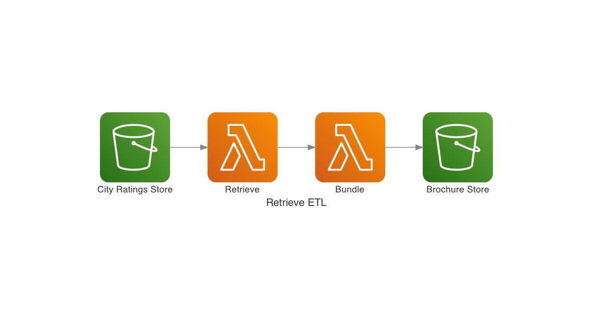

Retrieve
The retrieve pipeline downloads all the datasets for a list of given cities and bundle them all in a zip file.
How it works
The pipeline reads the city details from a City Rating CSV file and uses this information to automatically find the matching datasets to download.
The pipeline will attempt to download all the available datasets for each city. As a result, the amount of data to retrieve then bundle can be quite large.
As of 2021, there is about 11GB of datasets available and the pipeline take about 2h30 to complete.

Run it locally
Requirements
Run it
This pipeline was written in Rust and can be run locally with the following commands:
cd pipelines/retrieve
cargo run